Als zulässige Werte werden Basis- und abgeleitete Werte für die verschiedenen Expositionsbereiche angegeben. Diese gelten für sinusförmige periodische Vorgänge einer Frequenz. Für gepulste elektromagnetische Felder und Anwendung der Basiswerte siehe Abschnitte 3 und 4.
Die zulässigen Werte für Expositionsbereich 1 orientieren sich am Konzept der Vermeidung von Gefährdungen unter Berücksichtigung von Sicherheitsfaktoren. Es sind Effekte berücksichtigt, wie Reizung von Sinnesorganen, Nerven- und Muskelzellen, Beeinflussung der Herzaktion und Wärmeeffekte. Die Werte gelten längstens für eine Arbeitsschicht.
Für den Expositionsbereich 2 gelten Werte, die aufgrund der allgemeinen Zugänglichkeit und zur Vermeidung möglicher Belästigungen zusätzliche Sicherheitsfaktoren berücksichtigen.
1 |
Basiswerte für unmittelbare Wirkungen |
| Als Basiswerte für unmittelbare Wirkungen sind die in Tabelle 1 angegebenen Grenzwerte festgelegt. |
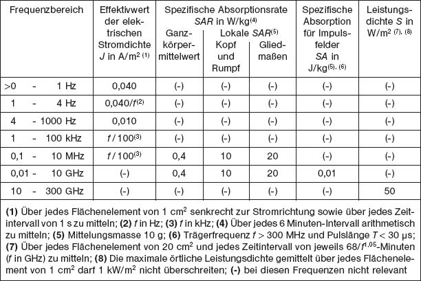
2 |
Abgeleitete Werte |
| Die abgeleiteten Werte sind so festgelegt, dass selbst unter Zugrundelegung der ungünstigsten Expositionsbedingungen der EM-Felder die Basiswerte nicht überschritten werden. Die abgeleiteten Werte für den Expositionsbereich 1 und den Expositionsbereich 2 wurden dabei unter Berücksichtigung verschiedener Sicherheitsfaktoren aus den Basiswerten der Tabelle 1 berechnet. | |
| Die abgeleiteten Werte sind grundsätzlich einzuhalten. Sie dürfen überschritten werden, wenn nachgewiesen ist, dass die Basiswerte nicht überschritten werden. | |
| Die Einhaltung der abgeleiteten Werte gewährleistet nicht zwangsläufig die Sicherheit von Trägern aktiver elektronischer Körperhilfsmittel. | |
| Die Bilder 1 und 2 enthalten die graphische Darstellung der abgeleiteten Werte. |
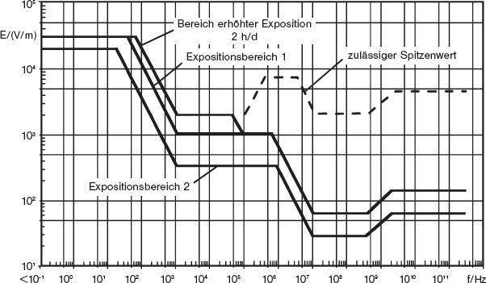
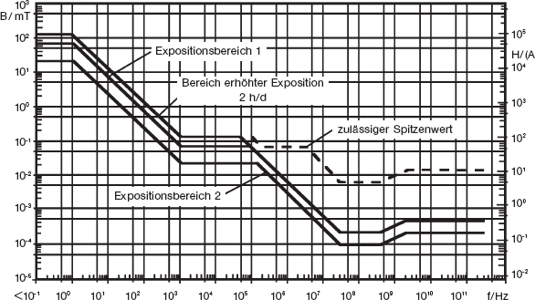
2.1 |
Abgeleitete Werte im Frequenzbereich 0 Hz bis 29 kHz |
| 2.1.1 | Zulässige Werte im Expositionsbereich 1 und im Bereich erhöhter Exposition |
| Bei der Festlegung der Werte für kurze Expositionszeiten werden die Sicherheitsfaktoren der abgeleiteten Werte für Expositionsbereich 1 verringert. Dies ist aufgrund der Größe der Sicherheitsfaktoren und der kontrollierten Expositionsbedingungen zulässig. Zur Begrenzung von Sekundäreffekten darf beim elektrischen Feld ein Wert von 30 kV/m nicht überschritten werden. |
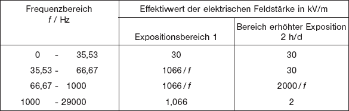
Der zulässige Wert der magnetischen Flussdichte im Frequenzbereich 0 bis 1 Hz des Expositionsbereiches 1 ist aufgrund von Induktionswirkungen auf bewegte leitfähige Körper im Magnetfeld festgelegt worden. Zusätzlich ist in diesem Frequenzbereich die Kraftwirkung auf ferromagnetische Teile zu berücksichtigen.
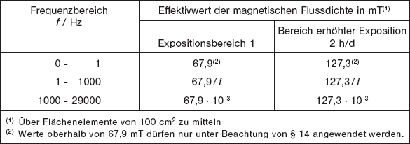
Für Extremitäten dürfen die in Tabelle 3 angegebenen Werte für Magnetfelder um den Faktor 2,5 überschritten werden.
| 2.1.2 | Zulässige Werte im Expositionsbereich 2 |
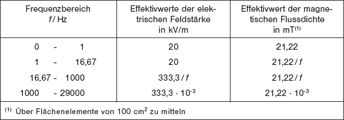
2.2 |
Übergangsbereich 29 kHz bis 91 kHz |
| Die Festlegungen für diesen Frequenzbereich berücksichtigen den Übergang von niederfrequenten Reizwirkungen zu hochfrequenten Wärmewirkungen. |
| 2.2.1 | Zulässige Werte im Expositionsbereich 1 und im Bereich erhöhter Exposition |
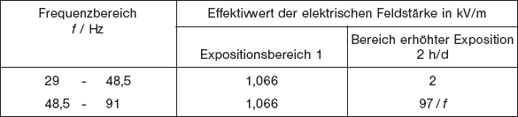
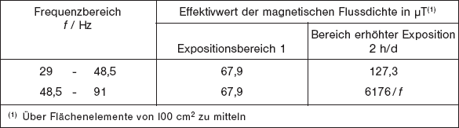
| 2.2.2 | Zulässige Werte im Expositionsbereich 2 |
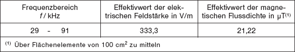
2.3 |
Abgeleitete Werte im Frequenzbereich 91 kHz bis 300 GHz |
| Für Expositionszeiten t ³ 6 Minuten (Dauerexposition) gelten die Werte nach Tabelle 8 bzw. 11. Dabei ist über jedes 6-Minuten-Intervall zu mitteln. | |
| Neben der Angabe von zulässigen Werten für Dauerexposition sind für Expositionszeiten t < 6 Minuten wegen der Thermoregulation des Körpers höhere Werte zulässig. Diese sind für jeden Einzelfall mit den in der Tabelle 9 enthaltenen Formeln zu bestimmen. Bei Anwendung der Werte der Tabelle 9 ist zusätzlich sicherzustellen, dass die Spitzenwerte nach Tabelle 10 nicht überschritten werden. |
| 2.3.1 | Zulässige Werte im Expositionsbereich 1 und im Bereich erhöhter Exposition |
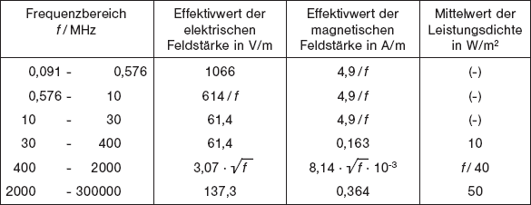
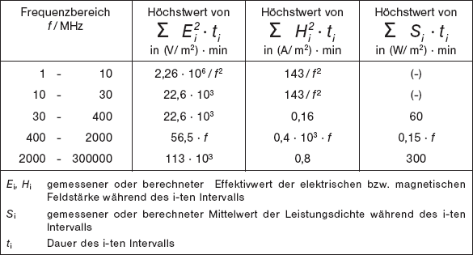
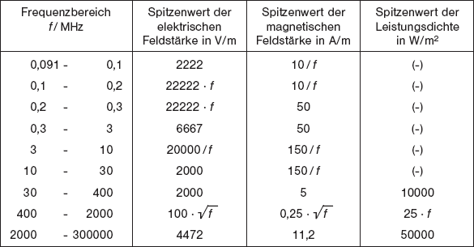
| 2.3.2 | Zulässige Werte im Expositionsbereich 2 |
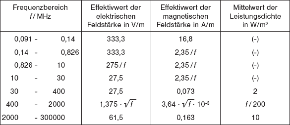
| 2.3.3 | Zulässige Werte für hochfrequente Ströme im Frequenzbereich 10 MHz bis 110 MHz |
| Im Frequenzbereich von 10 MHz bis 110 MHz können im menschlichen Körper hochfrequente Ströme eingekoppelt werden, durch die die SAR-Werte in den Extremitäten überschritten werden können. Aus diesem Grund werden zusätzlich zu den Feldstärken die Ströme durch die Extremitäten begrenzt. |
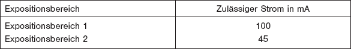
| 2.3.4 | Bewertung der Exposition bei elektromagnetischen Feldern mit mehreren Frequenzen |
| In elektromagnetischen Feldern unterschiedlicher Frequenzen werden unzulässige Expositionen im Frequenzbereich von 91 kHz bis 300 GHz vermieden, wenn die nachfolgenden Bedingungen eingehalten sind. |
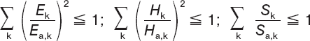
| Darin bedeuten | ||
| Ek, H k | gemessene oder berechnete spektrale Effektivwerte der elektrischen bzw. magnetischen Feldstärken gemittelt über jedes 6-Minuten-Intervall | |
| S k | Mittelwert der Leistungsdichte gemittelt über jedes 6-Minuten-Intervall | |
| Ea, k, H a, k,, S a, k | zulässige Werte der elektrischen bzw. magnetischen Feldstärken und der Leistungsdichte nach Tabelle 8 und 11. | |
2.4 |
Zulässige Werte für mittelbare Wirkungen |
| Die zulässigen Werte für Körperströme und Berührungsspannungen sind in Tabelle 13 angegeben. |
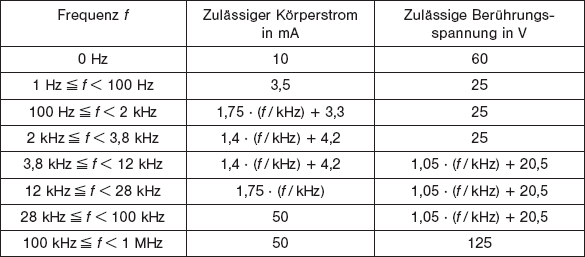
Die in Tabelle 13 enthaltenen Werte für zulässige Körperströme und für zulässige Berührungsspannungen gelten nicht für die Beeinflussung von Rohrleitungsnetzen und Netzen der Telekommunikation bzw. der Signaltechnik, in die durch parallel verlaufende Starkstromanlagen der Bahn und der elektrischen Energieversorgung Spannungen eingekoppelt werden.
3 |
Gepulste Felder |
| Für gepulste Felder, die aus einer zeitlichen Abfolge von sinus-, trapez-, dreieckförmigen oder exponentiellen Einzel- oder Mehrfachpulsen und Pausen oder Gleichfeldanteilen bestehen, kann eine vereinfachte Bewertung mit den Festlegungen der nachfolgenden Abschnitte vorgenommen werden. |
3.1 |
Frequenzbereich 0 Hz bis 91 kHz |
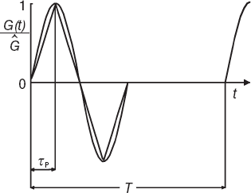
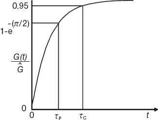
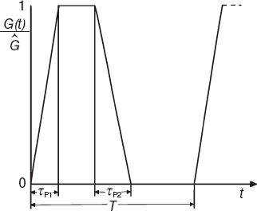
Diese Felder werden durch folgende zusätzliche Kenngrößen beschrieben:
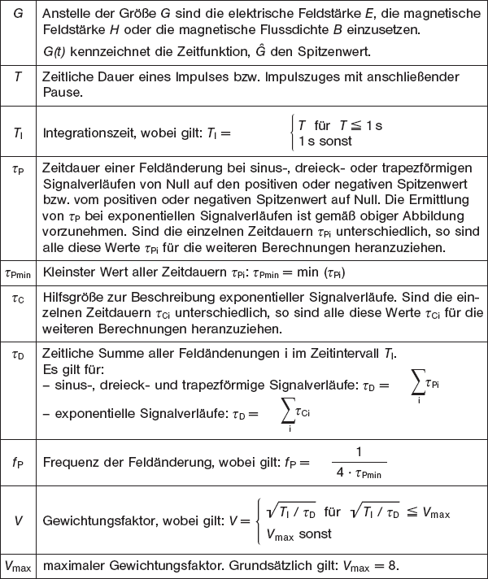
Unter folgenden Voraussetzungen kann beim Betrieb von Magnetresonanz-Anlagen in Wissenschaft und Forschung und bei medizinischen Anwendungen der maximale Gewichtungsfaktor vergrößert werden, wenn
| - | die verbindlichen Beschaffenheitsanforderungen nationaler Rechtsvorschriften, die einschlägige Gemeinschaftsvorschriften umsetzen, von der Anlage erfüllt werden, | |
| - | für die Arbeitsplätze Gefährdungsanalysen nach dem Arbeitsschutzgesetz unter besonderer Beachtung der Gefahren durch EM-Felder durchgeführt und dokumentiert werden, | |
| - | die notwendigen Schutzmaßnahmen getroffen sind, | |
| - | sie unter fachkundiger ärztlicher Aufsicht oder in Anwesenheit eines Sachkundigen durchgeführt werden. |
| Die Werte für die zulässigen zeitlichen Änderungen der magnetischen Flussdichte für gepulste Felder im Frequenzbereich von 0 Hz bis 91 kHz sind in der Tabelle 14 angegeben. Gleichzeitig dürfen die in Tabelle 15 angegebenen, jeweils über die Zeitdauer τpmin gemittelten Werte der zeitlichen Änderungen der magnetischen Flussdichte nicht überschritten werden. |
Tabelle 14: Maximal zulässige zeitliche Änderung der magnetischen Flussdichte im Expositionsbereich 1 und im Bereich erhöhter Exposition
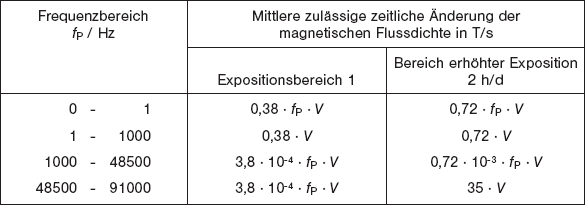
| Für Extremitäten dürfen die in Tabelle 14 und 15 angegebenen Werte um den Faktor 2,5 überschritten werden. | |
| Die maximal zulässigen Spitzenwerte der magnetischen Flussdichte bei gepulsten
Magnetfeldern ergeben sich aus den Werten der Tabelle 15 durch Multiplikation
mit dem Faktor τpmin bzw. aus den Werten der Tabellen 3 und 6 durch Multiplikation
mit dem Ausdruck 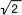 · V. |
3.2 |
Frequenzbereich 91 kHz bis 300 MHz |
| Bei gepulsten Feldern sind bei Anwendung der Tabelle 9 für Effektivwerte und Tabelle 10 für Spitzenwerte die Basiswerte der Tabelle 1 eingehalten. |
4 |
Anwendung der Basiswerte |
| Bei Verzicht der Anwendung der abgeleiteten Werte für Ganzkörperexposition ist sicherzustellen, dass unter allen auftretenden Bedingungen die Basiswerte eingehalten sind. Dabei werden die Basiswerte der Tabelle 1 als zusätzliche Sicherheit mit den Faktoren der nachfolgenden Tabelle 16 multipliziert. |
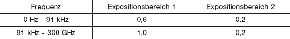
| Im Bereich erhöhter Exposition sowie für Teilkörperexposition sind die Basiswerte nach Tabelle 1 sicher einzuhalten. |